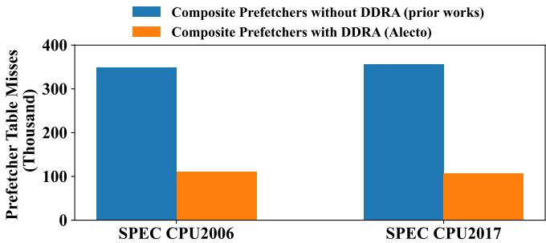
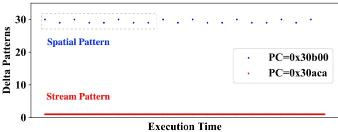
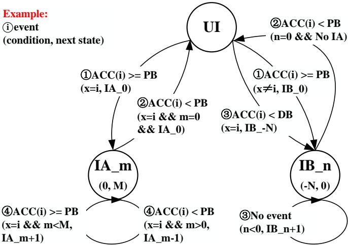
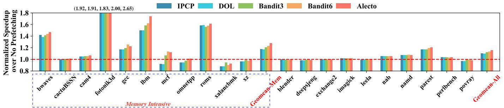
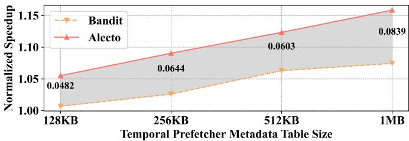

Integrating Prefetcher Selection with Dynamic Request Allocation Improves Prefetching Efficiency 论文解析¶
0. 论文基本信息¶
作者 (Authors)
- Mengming Li¹†
- Qijun Zhang¹†
- Yongqing Ren²∗
- Zhiyao Xie¹∗
发表期刊/会议 (Journal/Conference)
- 该论文未在提供的文本中明确指出其发表的期刊或会议名称。
发表年份 (Publication Year)
- 该论文未在提供的文本中明确指出其发表年份。
1. 摘要¶
目的
- 解决现有硬件预取器（prefetcher）选择算法的两大核心局限：输入需求请求分配不准确和预取器选择标准过于粗粒度。
- 提出一种能将预取器选择与动态需求请求分配（Dynamic Demand Request Allocation, DDRA）相结合的高效框架，以提升预取效率、性能和能效。
方法
- 提出 Alecto 框架，其核心是 动态需求请求分配 (DDRA) 原则，即在训练阶段就将需求请求精准路由给合适的预取器，而非仅在输出阶段进行过滤或调控。
- Alecto 的实现包含三个关键硬件组件：
- Allocation Table: 基于程序计数器（PC）索引，为每个内存访问指令维护一个状态机，对每个预取器进行细粒度识别。状态包括：未识别（UI）、已识别且激进（IA）、已识别且阻塞（IB）。
- Sample Table: 收集运行时指标（如预取命中/发出次数），用于计算预取准确率，并周期性更新 Allocation Table 的状态。
- Sandbox Table: 具有双重功能，一是记录已发出的预取请求以供 Sample Table 计算准确率，二是作为预取过滤器消除重复请求。
- 通过监控预取准确率并与熟练度边界 (PB) 和缺陷度边界 (DB) 进行比较，动态调整 Allocation Table 中的状态，从而实现对需求请求的动态分配和预取激进度的精细控制。

Fig. 4. The overall framework of Alecto. It consists of an Allocation Table, which enables fine-grained prefetcher identification and dynamic request allocation. It also includes a Sample Table and Sandbox Table for information collection. Additionally, the Sandbox Table functions as a prefetch filter.
结果
- 性能提升显著：在单核配置下，Alecto 相比当前最先进的基于强化学习（RL）的 Bandit 算法，IPC 提升 2.76%；在八核配置下，提升幅度扩大至 7.56%；对于内存密集型基准测试，性能提升高达 5.25%。
- 能效与资源利用优化：
- 减少 48% 的预取器表访问能耗，进而实现整个内存层次结构 7% 的能耗降低。
- 显著提升预取器表（尤其是时序预取器）的利用率，有效减少了表内冲突。
- 存储开销极低，仅为 < 1 KB，展现出优秀的可扩展性。
- 通用性强：Alecto 能够高效调度多种类型的复合预取器（如 GS+CS+PMP 或 GS+Berti+CPLX），并优于单一的非复合预取器。
| 对比维度 | Bandit | Alecto | Alecto 优势 |
|---|---|---|---|
| 单核 IPC 提升 | 基准 | +2.76% | 性能更高 |
| 八核 IPC 提升 | 基准 | +7.56% | 可扩展性更好 |
| 内存密集型 IPC 提升 | 基准 | +5.25% | 针对性强 |
| 预取表访问能耗 | 基准 | -48% | 能效卓越 |
| 存储开销 | ~4 KB (估算) | < 1 KB | 更轻量 |

Fig. 10. The key performance metrics of prefetchers.
结论
- 将预取器选择与动态需求请求分配相结合是提升硬件预取效率的关键。Alecto 通过在输入端进行精准分配，从根本上解决了预取器间的资源冲突和训练污染问题。
- Alecto 的细粒度识别机制使其能够为每个内存访问指令定制最优的预取策略，在准确性、覆盖率和及时性之间取得卓越平衡。
- 实验验证了 Alecto 在性能、能效和存储开销方面均达到了业界领先水平，并且具有广泛的适用性和良好的可扩展性，为未来处理器的预取架构设计提供了高效、轻量的解决方案。
2. 背景知识与核心贡献¶
研究背景
- 现代处理器普遍采用复合预取器 (composite prefetcher) 架构，集成多种专用预取算法（如 stream、stride、spatial、temporal）以应对应用程序复杂多样的内存访问模式。
- 这些预取器共享硬件资源（如预取表、预取队列、缓存空间和 DRAM 带宽），导致相互之间产生资源冲突。一个预取器的无效或冗余请求会污染共享资源，损害其他预取器的性能。
- 为解决此问题，已有工作提出了预取器选择 (prefetcher selection) 算法，但它们存在两个根本性局限。
现有方案的局限性与研究动机
- 局限一：需求请求分配不准确 (Inaccurate demand request allocation)
- 大多数方案（如 IPCP、Bandit）将所有上游的需求请求 (demand requests) 作为训练数据广播给所有预取器。
- 这导致无关的预取器表项被无用信息污染，造成预取器表冲突 (prefetcher table conflicts) 和有用表项的过早替换。
- 
Fig. 1. Comparison of prefetcher table misses in the same composite prefetchers without dynamic demand request allocation (DDRA) and Alecto that utilizes DDRA. With efficient demand request allocation, Alecto proves to significantly reduce conflicts that occur within the prefetchers’ table.
展示了 Alecto 通过精确分配能显著降低此类冲突。 - DOL 是唯一尝试选择性训练的方案，但其采用静态优先级，无法适应不同程序的动态特性。
- 局限二：选择标准过于粗粒度 (Coarse-grained selection criteria)
- 现有方案对所有需求请求应用统一的选择规则，无法为每个内存访问指令（PC）定制策略。
- 如

Fig. 2. Memory access patterns of 459.GemsFDTD.
所示，一个程序（如 459.GemsFDTD）内可能交织着多种访问模式，粗粒度规则会导致错误的预取器被激活，而合适的预取器被忽略。
核心贡献
- 提出了 Alecto，一个集成了动态需求请求分配 (Dynamic Demand Request Allocation, DDRA) 的高效预取器选择框架。
- Alecto 的三大关键创新：
- 动态需求请求分配 (DDRA)：在训练阶段就将需求请求精准路由到合适的预取器，从根本上防止无关预取器的表项污染。
- 细粒度的合适预取器识别：基于每个程序计数器 (PC) 的历史性能记录（主要是预取准确率），为每个内存访问指令独立地识别和管理预取器状态。
- 预取器选择与请求分配的深度集成：通过控制输入（即哪些预取器能看到请求）来间接但更有效地控制输出（即生成的预取请求）。
- 卓越的性能与效率：
- 在单核场景下，性能超越 SOTA 的 RL-based 方案 Bandit 2.76%；在八核场景下，优势扩大至 7.56%。
- 对于内存密集型基准测试，性能提升高达 5.25%。
- 显著提升了预取器表的利用率，并将预取器表访问相关的能耗降低了 48%（整个内存层次结构能耗降低 7%）。
- 存储开销极低，仅为 < 1 KB，且具有良好的可扩展性。
3. 核心技术和实现细节¶
0. 技术架构概览¶
整体技术架构
Alecto 的核心设计原则是 动态需求请求分配 (Dynamic Demand Request Allocation, DDRA)，旨在通过将每个来自 CPU 的 demand request 精准地路由给最适合处理其内存访问模式的 prefetcher，从而解决多预取器共享资源时产生的冲突和训练污染问题。其架构围绕三个主要硬件组件构建。
-
Allocation Table (分配表)
- 这是 Alecto 的决策核心，以 PC (Program Counter) 为索引。
- 为每个 PC 和每个预取器维护一个 状态机，包含三种状态：
- Un-Identified (UI): 未识别状态，谨慎地以保守的预取度（如 degree=2）进行训练。
- Identified and Aggressive (IA): 已识别且高效状态，允许更高的预取度（IA 状态有 M+1 个子状态，M=5）。
- Identified and Blocked (IB): 已识别但低效状态，暂时阻止该预取器接收此 PC 的请求（IB 状态有 N+1 个子状态，N=8）。
- 根据收集到的运行时性能指标（主要是准确率），在 Proficiency Boundary (PB=0.75) 和 Deficiency Boundary (DB=0.05) 阈值的驱动下进行状态转换。
- 在收到 demand request 时，查询此表并生成一个 identifier，该 identifier 指明了哪些预取器可以接收此请求及其对应的预取度。
-
Sample Table (采样表)
- 以 PC 为索引，负责收集运行时性能指标。
- 跟踪每个预取器为每个 PC 发出的 Issued 预取请求数量和被后续需求命中的 Confirmed 数量，用于计算 prefetching accuracy。
- 维护一个 Demand Counter（阈值为100），用于定义状态更新的 timing epoch。
- 维护一个 Dead Counter（阈值为150），用于检测内存访问模式是否已改变，防止死锁。
-
Sandbox Table (沙盒表)
- 以 内存地址 为索引，具有双重功能。
- 信息收集: 记录最近发出的预取请求及其触发的 PC。当一个 demand request 到达时，通过匹配地址和 PC 来确认该预取是否有效，并将此信息反馈给 Sample Table。
- 预取过滤 (Prefetch Filter): 在预取请求进入缓存前，检查其地址是否已在表中。如果命中，则丢弃该请求，有效消除 duplicate prefetching requests。
- 使用类似 BPU (Branch Prediction Unit) 中的哈希函数来压缩存储 PC，降低开销。
- 以 内存地址 为索引，具有双重功能。
Fig. 4. The overall framework of Alecto. It consists of an Allocation Table, which enables fine-grained prefetcher identification and dynamic request allocation. It also includes a Sample Table and Sandbox Table for information collection. Additionally, the Sandbox Table functions as a prefetch filter.
工作流程概述
- 步骤①: CPU 发出的 demand request（包含 PC 和地址）同时发送到 Allocation Table 和 Sandbox Table。
- 步骤②: Allocation Table 根据 PC 查询状态，生成 identifier，指示哪些预取器可以处理此请求及预取度。
- 步骤③: 被选中的预取器根据请求生成预取指令，这些指令用于更新 Sandbox Table 和 Sample Table。
- 步骤④/⑤: Sandbox Table 将预取请求的有效性（即是否被后续 demand hit）反馈给 Sample Table。
- 步骤⑥: 预取请求在进入下一级缓存前，由 Sandbox Table 扮演的过滤器进行去重。

Fig. 5. The state machine of Allocation Table. For every memory access instruction, each prefetcher has three states: Un-Identified (UI) indicates the suitability of this prefetcher is unidentified; Identified and Aggressive (IA) means the prefetcher is efficient and its prefetching degree should be promoted; Identified and Blocked (IB) applies when a prefetcher is deemed unsuitable for processing the memory access instructions.
关键创新与优势
- 细粒度预取器识别: 不同于以往对所有请求使用统一规则，Alecto 为 每个 PC 单独维护预取器状态，实现 PC 级别的精准调度。
- 集成式设计: 将 prefetcher selection 与 demand request allocation 深度集成。选择过程发生在请求分配阶段，而非输出过滤阶段，从根本上防止了无关预取器的表项污染。
- 高效的元数据管理: 对于 temporal prefetching，Alecto 能自动过滤掉非时间局部性、可被非时间预取器处理以及低频复发的请求，显著提升了其元数据表的利用率。实验表明，Alecto 仅需 256KB 元数据表即可达到 Bandit 使用 1MB 表的性能。
- 极低的存储开销: 整体存储开销约为 760 bytes（P=3时），远低于 RL-based 方法（如扩展版 Bandit 需要约 4KB）。
| 组件 | 功能 | 索引方式 | 关键参数/特性 |
|---|---|---|---|
| Allocation Table | 预取器状态管理与请求分配决策 | PC | 状态机 (UI/IA/IB), PB=0.75, DB=0.05 |
| Sample Table | 运行时性能指标收集 | PC | Demand Counter (100), Dead Counter (150) |
| Sandbox Table | 预取有效性验证 & 请求去重 | 内存地址 | 哈希压缩 PC, 双重功能 |
1. 动态需求请求分配 (Dynamic Demand Request Allocation, DDRA)¶
核心观点 Alecto 的 动态需求请求分配 (Dynamic Demand Request Allocation, DDRA) 是其核心设计原则，旨在通过精细化的预取器选择与需求请求路由，解决传统混合预取系统中因资源共享和训练数据污染导致的性能瓶颈。其实现依赖于一个名为 Allocation Table 的核心硬件结构，并辅以 Sample Table 和 Sandbox Table 进行运行时信息收集与反馈。
实现原理与算法流程
- Alecto 的工作流程始于一个包含 PC (Program Counter) 和内存地址的 demand request。
- 该请求被同时发送至 Allocation Table 和 Sandbox Table。
- Allocation Table 根据 PC 查找对应条目，该条目记录了针对此 PC 发出的所有需求请求，各个预取器的当前 state。
- 基于这些状态，Allocation Table 生成一个 identifier，该标识符指明了哪些预取器有权接收此需求请求以及它们对应的 prefetching degree（预取度）。
- 需求请求根据此 identifier 被动态路由到指定的预取器进行处理和训练。
- 被选中的预取器生成的 prefetching requests 会更新 Sandbox Table 和 Sample Table。
- Sandbox Table 通过比对后续到来的 demand request 与已发出的 prefetching request，来判断预取是否成功（即“有用”），并将此信息反馈给 Sample Table。
- Sample Table 汇总每个 PC 下各预取器的 Issued（发出次数）和 Confirmed（命中次数）数据，用于计算 prefetching accuracy（预取准确率）。
- 当一个 PC 的 Demand Counter（需求计数器）达到预设阈值（例如100次访问）时，Alecto 会根据 Sample Table 中统计的准确率触发 Allocation Table 的状态机转换。
Fig. 5. The state machine of Allocation Table. For every memory access instruction, each prefetcher has three states: Un-Identified (UI) indicates the suitability of this prefetcher is unidentified; Identified and Aggressive (IA) means the prefetcher is efficient and its prefetching degree should be promoted; Identified and Blocked (IB) applies when a prefetcher is deemed unsuitable for processing the memory access instructions.
状态机与参数设置 Allocation Table 为每个 PC-预取器对维护一个三态状态机：
- Un-Identified (UI): 初始状态，表示预取器对该 PC 的适用性未知。此时，Alecto 会以一个 保守的预取度
c（实验中设为3）将需求请求分配给该预取器。 - Identified and Aggressive (IA): 表示该预取器高效且适用。此状态有
M+1个子状态（IA 0到IA M，实验中M=5），子状态编号越高，分配的预取度越大（c + m + 1）。 - Identified and Blocked (IB): 表示该预取器不适用。此状态有
N+1个子状态（IB -N到IB 0，实验中N=8），子状态编号越低，被阻塞的时间越长（以 epoch 为单位）。
状态转换由两个关键阈值驱动：
- Proficiency Boundary (PB): 准确率阈值，高于此值则认为预取器表现良好（实验中设为 0.75）。
- Deficiency Boundary (DB): 准确率阈值，低于此值则认为预取器表现极差（实验中设为 0.05）。
主要状态转换逻辑如下：
- UI → IA / IB: 当收集到足够数据后，准确率超过 PB 的预取器进入
IA 0，其余进入IB 0。若多个预取器达标且包含 temporal prefetcher，则优先提升非时间型预取器，以优化时间型预取器的元数据存储。 - IA → UI: 若 IA 状态预取器的准确率跌至 PB 以下，则降级回 UI。
- UI → IB -N: 若预取器准确率低于 DB，则被重罚，直接进入
IB -N状态，长时间阻塞。 - IA m ↔ IA m±1: 根据准确率在 PB 和 DB 之间的波动，动态调整 IA 状态的子状态，从而精细调节预取度。
Fig. 5. The state machine of Allocation Table. For every memory access instruction, each prefetcher has three states: Un-Identified (UI) indicates the suitability of this prefetcher is unidentified; Identified and Aggressive (IA) means the prefetcher is efficient and its prefetching degree should be promoted; Identified and Blocked (IB) applies when a prefetcher is deemed unsuitable for processing the memory access instructions.

输入输出关系及整体作用
- 输入: 来自处理器核心或上层缓存的 demand request，核心信息是其 PC。
- 输出:
- 对预取器的 动态分配指令 (identifier)，决定了哪些预取器能“看到”并处理此请求。
- 经过 Sandbox Table 过滤后的、无重复的 prefetching requests，发送至下一级缓存。
- 在整体中的作用:
- 精准训练: 通过只将需求请求分配给合适的预取器，确保每个预取器的表项（如 Pattern History Table）只存储与其专长模式相关的元数据，极大提升了 prefetcher table utilization。
- 冲突消解: 从根本上避免了无关请求对预取器表的“污染”，显著降低了 prefetcher table misses。
- 性能协同: 将预取器选择与需求分配融为一体，不仅能提升 accuracy，还能通过动态调整预取度来优化 coverage 和 timeliness，实现三者的平衡。
- 资源节约: 减少了无效的表项访问和更新，从而降低了 48% 的预取器表访问能耗。
Fig. 1. Comparison of prefetcher table misses in the same composite prefetchers without dynamic demand request allocation (DDRA) and Alecto that utilizes DDRA. With efficient demand request allocation, Alecto proves to significantly reduce conflicts that occur within the prefetchers’ table.
2. 细粒度预取器识别 (Fine-grained Prefetcher Identification)¶
核心机制与状态定义
Alecto 的细粒度预取器识别机制完全围绕 Allocation Table 展开。该表以内存访问指令的 PC (Program Counter) 为索引，为系统中的每一个预取器维护一个独立的状态。这个状态直接反映了该预取器处理由该特定 PC 产生的内存访问模式的历史效能。
- Allocation Table 中每个预取器的状态被严格定义为以下三种之一：
- Un-Identified (UI): 表示该预取器对于此 PC 的适合性尚未确定。在此状态下，Alecto 会谨慎地将需求请求分配给该预取器，但将其 prefetching degree (预取度) 限制在一个保守值（例如 c=3）。
- Identified and Aggressive (IA): 表示该预取器被证明对此 PC 高效。Alecto 不仅会分配需求请求，还会提升其预取度。IA 状态包含 M+1 个子状态 (IA₀ 到 IAₘ)，其中 m 值越大，分配的预取度越高（计算公式为 c + m + 1）。
- Identified and Blocked (IB): 表示该预取器被判定为不适合处理此 PC 的请求。Alecto 会完全阻断流向该预取器的需求请求。IB 状态包含 N+1 个子状态 (IB₋ₙ 到 IB₀)，其中 n 值越小（即负得越多），表示阻塞时间越长。
Fig. 5. The state machine of Allocation Table. For every memory access instruction, each prefetcher has three states: Un-Identified (UI) indicates the suitability of this prefetcher is unidentified; Identified and Aggressive (IA) means the prefetcher is efficient and its prefetching degree should be promoted; Identified and Blocked (IB) applies when a prefetcher is deemed unsuitable for processing the memory access instructions.
状态转换逻辑与性能指标
状态的转换由两个关键阈值驱动：Proficiency Boundary (PB) 和 Deficiency Boundary (DB)。这些阈值用于评估从 Sample Table 和 Sandbox Table 收集的运行时指标，主要是 prefetching accuracy (预取准确率)。
- 状态转换规则:
- UI → IA₀ / UI → IB₀: 当一个 epoch（例如收集到 100 个需求请求）结束后，如果某个预取器的准确率超过 PB (例如 0.75)，则晋升至 IA₀；其余未达标的预取器则降级至 IB₀。特殊规则：若多个预取器同时达标且其中包含 temporal prefetcher，则优先晋升非时序预取器，以优化时序预取器宝贵的元数据存储。
- IA₀ → UI: 如果 IA 状态的预取器准确率回落到 PB 以下，则降级回 UI 状态，重新评估。若此举导致没有预取器处于 IA 状态，则会触发 IB₀ → UI 的转换，重新启用被冷却的预取器。
- UI → IB₋ₙ: 如果预取器的准确率低于 DB (例如 0.05)，表明其产生了大量无效预取，浪费资源。此时将其状态直接设为 IB₋ₙ（例如 N=8），进入长时间阻塞。
- IAₘ → IAₘ₊₁ / IAₘ → IAₘ₋₁: 对于已处于 IA 状态的预取器，若其准确率持续高于 PB，则提升其子状态（增加预取度）；若低于 DB，则降低其子状态（减少预取度）。
输入、输出及其在整体架构中的作用
-
输入:
- 上游: 来自 CPU 核心或上层缓存的 demand request，包含 PC 和 memory address。
- 内部反馈: 来自 Sandbox Table 和 Sample Table 的运行时性能数据（已确认的预取命中数、发出的预取请求数等）。
-
输出:
- 下游: 一个 identifier (标识符)，该标识符包含了应接收此需求请求的预取器序列号及其对应的预取度。这个标识符被发送到一个多路复用器（multiplexer），用于动态地将需求请求路由到正确的预取器。
-
在 Alecto 整体架构中的作用:
- 实现动态需求请求分配 (DDRA): 这是 Alecto 的核心创新。通过细粒度识别，确保每个预取器只接收到与其专长匹配的需求请求，从根本上解决了预取器表项污染和硬件资源冲突问题。
- 协同优化三大指标: 该机制不仅提升了 accuracy (准确率)，还通过允许多个高效预取器（IA 状态）并行工作来保证 coverage (覆盖率)，并通过动态调整预取度（IA 的子状态）来优化 timeliness (及时性)。
- 赋能时序预取: 对于 temporal prefetcher，该机制能有效过滤掉非时序、低频复发或可被其他预取器处理的请求，极大提升了其元数据表的利用率。
关键参数设置
根据论文实验部分（Section V-B），Alecto 的关键参数配置如下：
| 参数 | 符号 | 默认值 | 说明 |
|---|---|---|---|
| 保守预取度 | c | 3 | UI 状态下分配的预取度 |
| IA 子状态数量 | M | 5 | 决定最大可提升的预取度级别 |
| IB 子状态数量 | N | 8 | 决定最长阻塞周期 |
| 熟练度边界 | PB | 0.75 | 晋升至 IA 状态的准确率阈值 |
| 缺陷度边界 | DB | 0.05 | 降级至 IB 状态或降低 IA 级别的准确率阈值 |
| 评估周期 | - | 100 | 触发状态更新所需的需求请求数（Demand Counter） |
3. 三态状态机与自适应 aggressiveness¶
三态状态机与自适应 aggressiveness 的实现原理
Alecto 的核心在于其 Allocation Table，该表为每个 PC (Program Counter) 地址索引，并为系统中的每个预取器维护一个独立的状态。这个状态机是实现 动态需求请求分配 (DDRA) 和 细粒度预取器选择 的关键。
-
状态定义：每个预取器-PC 对可以处于以下三种状态之一：
- Un-Identified (UI): 预取器对该 PC 的适用性尚未确定。在此状态下，Alecto 会谨慎地将需求请求分配给该预取器，但将其 prefetching degree 限制在一个 保守值
c（例如 3）。 - Identified and Aggressive (IA): 预取器被证明对该 PC 高效。Alecto 不仅会分配需求请求，还会提升其 prefetching degree。IA 状态包含 M+1 个子状态（从 IA₀ 到 IAₘ），数值越高，预取程度越激进。
- Identified and Blocked (IB): 预取器被判定为不适用于该 PC。Alecto 会 阻断 需求请求流向该预取器。IB 状态包含 N+1 个子状态（从 IB₋ₙ 到 IB₀），数值越小（如 IB₋₈），阻塞时间越长。
- Un-Identified (UI): 预取器对该 PC 的适用性尚未确定。在此状态下，Alecto 会谨慎地将需求请求分配给该预取器，但将其 prefetching degree 限制在一个 保守值
-
状态转换阈值：状态转换由两个关键阈值驱动：
- Proficiency Boundary (PB): 准确率高于此阈值（实验中设为 0.75）的预取器被视为高效。
- Deficiency Boundary (DB): 准确率低于此阈值（实验中设为 0.05）的预取器被视为低效。
Fig. 5. The state machine of Allocation Table. For every memory access instruction, each prefetcher has three states: Un-Identified (UI) indicates the suitability of this prefetcher is unidentified; Identified and Aggressive (IA) means the prefetcher is efficient and its prefetching degree should be promoted; Identified and Blocked (IB) applies when a prefetcher is deemed unsuitable for processing the memory access instructions.
算法流程与状态转换逻辑
状态机的转换逻辑由 Sample Table 和 Sandbox Table 收集的运行时指标（主要是准确率）触发。整个流程以 epoch 为单位进行评估，一个 epoch 被定义为处理 100 个来自同一 PC 的需求请求。
- 初始状态：当一个新的 PC 首次出现时，所有预取器的状态均被初始化为 UI。
- 主要状态转换路径：
- UI → IA / IB: 在一个 epoch 结束后，如果某个预取器的准确率 超过 PB，则被提升至 IA₀；其余未达标的预取器则被降级至 IB₀。特殊情况：如果多个预取器同时达标且其中包含 temporal prefetcher，Alecto 会优先选择 non-temporal prefetcher，以优化 temporal prefetcher 的元数据存储。
- IA → UI: 如果一个处于 IA 状态的预取器准确率 跌落至 PB 以下，它会被降级回 UI 状态。如果此举导致没有预取器处于 IA 状态，系统会尝试将处于 IB₀ 的预取器也重置为 UI，以重新评估。
- UI → IB₋ₙ: 如果一个预取器的准确率 低于 DB，表明其产生了大量无效预取，浪费资源。此时，它会被直接降级至最深的阻塞状态 IB₋ₙ（n=N=8），并在后续 epoch 中逐步“解冻”（IB₋ₙ → IB₋ₙ₊₁ → ... → IB₀）。
- IAₘ 内部调整: 处于 IA 状态的预取器，其子状态会根据准确率动态调整。若准确率持续高于 PB，则 IAₘ → IAₘ₊₁（增加 aggressiveness）；若低于 DB，则 IAₘ → IAₘ₋₁（降低 aggressiveness）。M 被设为 5，因此 IA 状态共有 6 个级别。
输入输出关系及在整体架构中的作用
该状态机是连接 Alecto 各组件的中枢，其输入和输出定义了整个框架的数据流。
-
输入:
- 上游: 来自 CPU 核心的 demand request，包含 PC 和内存地址。
- 下游反馈: 来自 Sandbox Table 的信息，用于更新 Sample Table 中的计数器（如
IssuedByP1,ConfirmedP1），从而计算出每个预取器-PC 对的 prefetching accuracy。
-
输出:
- 分配指令 (Identifier): Allocation Table 根据 PC 查找对应的状态，并生成一个 identifier。该 identifier 包含了应接收此请求的预取器序列号及其对应的 prefetching degree（UI 状态为
c，IAₘ 状态为c + m + 1）。 - 动态分配: 这个 identifier 被发送到一个多路复用器 (multiplexer)，后者据此 动态地将 demand request 路由 给指定的预取器。处于 IB 状态的预取器不会收到任何请求，从而避免了无关训练和表项污染。
- 分配指令 (Identifier): Allocation Table 根据 PC 查找对应的状态，并生成一个 identifier。该 identifier 包含了应接收此请求的预取器序列号及其对应的 prefetching degree（UI 状态为
-
在整体中的作用:
- 精准训练: 通过只将相关的需求请求分配给合适的预取器，确保了每个预取器的 training data 高度相关，极大提升了 prefetcher table 的利用率和有效性。
- 冲突消解: 阻止了无关请求对预取器内部表项的污染，显著减少了 prefetcher table misses。
- 自适应优化: 将 prefetcher selection 与 prefetching degree control 深度集成，实现了对 accuracy, coverage, 和 timeliness 三者的动态平衡。最终，由 Sandbox Table 作为 prefetch filter 来消除不同预取器之间可能产生的重复请求，确保了输出的纯净。
4. 运行时指标收集机制 (Sample Table & Sandbox Table)¶
运行时指标收集机制的核心组件与流程
Alecto 的运行时指标收集机制由 Sample Table 和 Sandbox Table 两个核心硬件结构协同完成，其目标是为 Allocation Table 的状态机提供精确、细粒度的性能反馈，以驱动动态需求请求分配（DDRA）。
- Sandbox Table 是整个反馈回路的基石，它扮演着双重角色：
- 作为预取请求的记录器：它索引于内存访问地址，记录最近由各个预取器发出的预取请求地址及其触发源（即对应的 PC）。
- 作为预取过滤器 (prefetch filter)：在预取请求被发送到下一级缓存前，查询此表以消除重复请求，避免带宽和缓存空间的浪费。
- Sample Table 是性能数据的聚合器，它索引于 PC 地址，负责为每个内存访问指令（PC）统计关键性能指标。
- 两者协同工作的基本流程如下：
- 当一个需求请求 (demand request) 到达时，其 PC 和 地址 被同时发送给 Allocation Table（用于分配）和 Sandbox Table（用于后续匹配）。
- 被选中的预取器根据分配结果生成预取请求，这些请求的地址和关联的 PC 会被写入 Sandbox Table。
- 当后续的需求请求到达时，系统会查询 Sandbox Table。如果该需求请求的地址与 Sandbox Table 中的某个条目标签命中 (tag hit)，则进一步验证该需求请求的 PC 是否与条目中记录的 PC 匹配。
- 如果 PC 匹配成功，则判定该预取请求为一次有用预取 (useful prefetch)，并通知 Sample Table 将对应 PC 和预取器的确认计数器 (Confirmed counter) 加一。
Fig. 4. The overall framework of Alecto. It consists of an Allocation Table, which enables fine-grained prefetcher identification and dynamic request allocation. It also includes a Sample Table and Sandbox Table for information collection. Additionally, the Sandbox Table functions as a prefetch filter.
关键性能指标的计算与管理
Sample Table 通过维护多个计数器来量化每个预取器在特定 PC 上的表现，并管理状态更新的时机。
- 对于每个 PC，Sample Table 维护以下关键计数器：
- IssuedByPx: 记录由预取器 Px 发出的总预取请求数。
- ConfirmedPx: 记录由预取器 Px 发出并被后续需求命中的有用预取请求数。
- Demand Counter: 记录该 PC 遇到的总需求数，用于定义时间周期 (timing epoch)。
- Dead Counter: 一个饱和计数器，用于检测死锁场景 (deadlock scenarios)，即 PC 处于 IA 状态但长期无法生成任何预取请求。
- 预取准确率 (prefetching accuracy) 的计算公式为：
ConfirmedPx / IssuedByPx。这个准确率是驱动 Allocation Table 状态转换的核心依据。 - 时间周期 (epoch) 的设定：
- Alecto 定义一个 epoch 为 100 次需求访问。当 Demand Counter 达到此阈值时，会触发 Allocation Table 的状态评估与可能的转换，并重置该计数器。
- 死锁检测与恢复：
- Dead Counter 在 Alecto 未能生成预取请求时递增，在其他情况下递减。
- 其阈值（例如 150）高于 Demand Counter，因为死锁概率较低。
- 一旦 Dead Counter 达到阈值，Alecto 会将该 PC 对应的所有预取器状态重置回 UI (Un-Identified) 状态，以重新开始搜索合适的预取器。
存储优化与工程实现细节
为了在有限的硬件开销内高效运行，该机制采用了巧妙的存储优化策略。
- PC 哈希压缩：
- Sandbox Table 需要存储触发预取请求的 PC 信息，但完整 PC 位宽过大。
- Alecto 借鉴了 Branch Prediction Unit (BPU) 设计中的通用哈希函数，将 PC 地址分割成 n 段并进行 XOR 操作，生成一个紧凑的哈希值进行存储。
- 通过将 n 设置为与表项数量对数相对应，显著降低了存储开销。
- 整体存储开销：
- 根据论文中的存储开销分析（Table III），整个 Alecto 框架（包含 Allocation Table, Sample Table, 和兼具过滤功能的 Sandbox Table）在调度 3 个预取器时，总开销仅为 约 760 字节，远低于 RL-based 方案。
| 组件 | 功能 | 索引方式 | 关键数据 |
|---|---|---|---|
| Sandbox Table | 记录预取请求、过滤重复、确认有用预取 | 内存地址 | 预取地址、哈希后的PC |
| Sample Table | 聚合性能指标、管理计数器 | PC 地址 | IssuedByPx, ConfirmedPx, Demand Counter, Dead Counter |
在整个 Alecto 框架中的作用
该运行时指标收集机制是连接预取器行为与智能决策的桥梁，其作用至关重要。
- 提供决策依据：为 Allocation Table 的状态机（UI, IA, IB）提供实时、准确的预取准确率数据，确保状态转换基于真实性能。
- 实现细粒度控制：通过为每个 PC 单独维护性能记录，使得 Alecto 能够实现PC-grained的预取器选择和需求分配，克服了传统方案粗粒度的缺陷。
- 保障系统鲁棒性：通过 Dead Counter 机制，能够自动检测并从因内存访问模式改变而导致的无效预取状态中恢复，保证了系统的长期有效性。
- 提升资源效率：Sandbox Table 的双重角色（记录+过滤）不仅提供了反馈，还直接提升了预取系统的准确率和带宽利用率，而其哈希压缩技术则控制了硬件成本。
5. 集成式预取请求过滤 (Integrated Prefetch Filtering)¶
实现原理与核心机制
- Alecto 的 集成式预取请求过滤 (Integrated Prefetch Filtering) 机制并非一个独立的硬件模块，而是对 Sandbox Table 功能的巧妙复用和扩展。
- 其核心思想是：在所有被选中的预取器（根据 Allocation Table 的动态分配结果）生成预取请求后，但在这些请求被发送到下一级缓存之前，进行一次全局的重复性检查。
- Sandbox Table 在此扮演双重角色：
- 信息收集器：记录近期由各预取器发出的预取请求及其关联的 PC（程序计数器）信息，用于后续计算预取准确率（见 Section IV-C）。
- 预取过滤器：利用其已有的地址记录，作为过滤重复请求的“布隆过滤器”式结构。
Fig. 4. The overall framework of Alecto. It consists of an Allocation Table, which enables fine-grained prefetcher identification and dynamic request allocation. It also includes a Sample Table and Sandbox Table for information collection. Additionally, the Sandbox Table functions as a prefetch filter.
算法流程与工作步骤
- 当一个或多个被 Allocation Table 选中的预取器生成预取请求后，这些请求会进入过滤阶段（对应图4中的步骤⑥）。
- 对于每一个待发出的预取请求，执行以下操作：
- 使用该预取请求的 内存地址 作为关键字，查询 Sandbox Table。
- 如果发生 Tag Hit（命中）：表明该地址的预取请求近期已经被其他预取器（或同一个预取器）发出过。此时，当前的预取请求被视为 冗余 (redundant)，并被 直接丢弃，从而避免了对缓存和内存带宽的浪费。
- 如果没有发生 Tag Hit（未命中）：表明这是一个新的、非重复的预取请求。该请求会被 加入预取队列 (prefetch queue)，并最终被发送到下一级缓存以执行数据预取。
- 这个过滤过程发生在预取流水线的末端，确保了即使多个预取器因处理相似模式而产生重叠请求，系统也只会执行一次实际的预取操作。
输入输出关系及在整体架构中的作用
- 输入：来自一个或多个被动态选中的预取器（如 Stream, Stride, Spatial 等）生成的原始预取请求流。
- 输出：一个经过去重的、精简的预取请求流，仅包含非冗余的请求，被送往下一级缓存。
- 在整体架构中的关键作用：
- 提升预取准确率 (Prefetching Accuracy)：通过消除重复请求，减少了因同一数据块被多次预取而导致的“假阳性”计数，使准确率指标更能反映预取器的真实预测能力。
- 释放硬件资源：显著降低了对 prefetch queue、cache bandwidth 和 DRAM bandwidth 的无效占用，将宝贵的资源留给真正有用的预取或需求请求。
- 赋能激进预取策略：由于存在末端过滤机制，Alecto 可以更放心地让高准确率的预取器（处于 IA 状态）采用更 激进 (aggressive) 的预取度（即预取更多行），而不必过度担心由此产生的重复请求污染缓存。这在 Section VI-A 的性能分析中得到印证，Alecto 在不牺牲覆盖率和及时性的前提下，大幅提升了准确率（超越 Bandit6 13.51%）。
- 零额外存储开销：这是该设计最精妙之处。过滤功能完全复用了为收集运行时指标（Runtime Metrics Gathering）而必需的 Sandbox Table，没有引入任何新的专用存储结构，实现了功能增强与成本控制的完美平衡。
与独立过滤方案的对比优势
- 论文在 Section VII-C 中通过与 PPF (Perceptron-based Prefetch Filtering) 的对比，凸显了 Alecto 集成式过滤的优势。
- PPF 等独立过滤器工作在预取器之后，只能对已经生成的请求进行“事后”过滤。它无法区分一个请求是“有用但重复”还是“完全无用”，容易 误杀 (incorrectly filter out) 有用的请求，导致 预取覆盖率 (Prefetching Coverage) 下降。
- 相比之下，Alecto 的过滤是其 动态需求请求分配 (DDRA) 策略的自然延伸和补充。DDRA 从源头上减少了无关预取器的训练和激活，而末端的集成过滤则处理了剩余的、由多个有效预取器产生的合理重叠。这种“源头控制 + 末端兜底”的组合拳，能同时提升 准确率 和 覆盖率，这是单纯的事后过滤无法做到的。实验数据显示，Alecto 在内存密集型基准测试中，性能远超 IPCP+PPF 的组合（分别高出 18.38% 和 14.98%）。
4. 实验方法与实验结果¶
实验设置
- 仿真平台与基线配置：
- 使用 gem5 执行驱动模拟器，配置参数对标 Intel Skylake 处理器。
- 主要系统配置详见下表。
| 组件 | 配置 |
|---|---|
| Core | 4-wide out-of-order, 2.0 GHz |
| L1 I/D Cache | 32 KB, 8-way, 64B block, 4-cycle hit |
| L2 Cache | 1 MB, 8-way, 64B block, 12-cycle hit |
| LLC (L3) | 8 MB (默认), 16-way, 64B block |
| DRAM | DDR3-1600 / DDR4-2400, 12.8/19.2 GB/s |
-
对比的 Prefetcher Selection 算法：
- IPCP：静态优先级（Stream > Stride > Spatial），所有 Prefetcher 接收全部请求。
- DOL：静态顺序分配（Stream → Stride → Spatial），请求按序传递直到被处理。
- Bandit：基于 Reinforcement Learning (RL) 的轻量级方案，通过调节 Prefetching Degree（0 或 X）来开关 Prefetcher。实验中测试了
Bandit3(X=3) 和Bandit6(X=6)。 - Alecto：本文提出的方案，核心是 Dynamic Demand Request Allocation (DDRA)。
-
被调度的 Prefetcher 集合：
- 主实验：GS (Stream), CS (Stride), PMP (Spatial)。
- 泛化性实验：将 CS 和 PMP 替换为 Berti 和 CPLX。
- 时序预取实验：在 L2 Cache 引入一个 Temporal Prefetcher，并与 L1 的复合预取器协同工作。
-
工作负载：
- 单核：SPEC CPU2006, SPEC CPU2017，使用 simpoint 技术生成检查点。
- 多核：PARSEC 3.0, Ligra，以及 SPEC 的同构/异构混合。

TABLE I SYSTEM CONFIGURATION.
结果数据分析
- 单核性能：
- 在 SPEC06/17 上，Alecto 相比 SOTA 的 Bandit 平均 IPC 提升 2.76%。
- 在 内存密集型 基准测试上，Alecto 相比 Bandit6 提升 5.25%。
- Alecto 能更好地平衡 Prefetching Accuracy, Coverage, 和 Timeliness，其准确率比 Bandit6 高 13.51%，且未牺牲覆盖率和及时性。

Fig. 8. IPC speedup compared to no prefetching on SPEC06 benchmarks. Memory-intensive workloads are highlighted within dotted blue line, and the geomean speedup is calculated separately. All prefetcher selections algorithms schedule the same composite prefetcher: GS [37] + CS [37] + PMP [27].

Fig. 9. IPC speedup compared to no prefetching on SPEC17 benchmarks. Memory-intensive workloads are highlighted within dotted blue line, and their geomean speedup is calculated separately. All prefetcher selections schemes algorithms the same composite prefetcher: GS [37] + CS [37] + PMP [27].
Fig. 10. The key performance metrics of prefetchers.
- 多核可扩展性：
- 在 八核 配置下，Alecto 相比 Bandit6 的性能优势扩大至 7.56%。
- RL-based 的 Bandit 在多核下因 跨核干扰 而难以收敛到最优策略，而 Alecto 的细粒度控制能有效避免此问题。

Fig. 17. Eight-core performance speedup compared to no prefetching on SPEC06, SPEC17, PARSEC and Ligra benchmarks.
- 时序预取效率：
- Alecto 通过 DDRA 精准过滤训练请求，显著提升了 Temporal Prefetcher 的元数据表利用率。
- 相比 Bandit 和 Triangel，Alecto 在时序预取场景下性能分别提升 8.39% 和 2.18%。
- 为达到 Bandit 在 1MB 元数据表下的性能，Alecto 仅需 \<256KB 的表空间。

Fig. 13. The performance speedup of temporal prefetching with different demand request allocation policies.

Fig. 14. Geomean IPC speedup with varying metadata table size.
- 能效与开销：
- 存储开销：Alecto 总开销约为 760 bytes (\<1KB)，远低于 RL 方案（如扩展版 Bandit 需 4KB）。
- 能耗：Alecto 将 Prefetcher 表的访问次数减少了 48%，从而在内存层次结构上实现了 7% 的平均能耗降低。

TABLE III STORAGE OVERHEAD ANALYSIS.
消融实验
- 动态请求分配 vs. 动态度数调整：
- 为了验证 Demand Request Allocation 是性能提升的主因，作者进行了消融研究。
- 实验将 Alecto 的 IA 状态与固定度数（6，同 Bandit6）绑定，禁用其动态调整度数的能力。
- 结果：即使禁用动态度数调整，Alecto 仍比 Bandit6 快 4.34%；启用完整功能后，优势扩大到 5.25%。这证明 请求分配机制是核心贡献。

Fig. 19. On memory intensive benchmarks, performance speedup for Bandit6, Alecto with the fixed prefetching degree, and complete Alecto.
- 与纯 Prefetch Filtering 的对比：
- 作者将 Alecto 与 **PPF **(Perceptron-based Prefetch Filtering) 进行对比。PPF 只在 Prefetch 请求发出后进行过滤，而不干预训练过程。
- 结果：PPF 虽然提高了准确率，但过度过滤导致 Coverage 大幅下降（例如在 GemsFDTD 上从 0.67 降至 0.35）。
- Alecto 通过在训练阶段就精准分配请求，同时提升了 Accuracy 和 Coverage，最终在内存密集型负载上比 PPF 高出 14.98%~18.38%。

Fig. 20. On memory intensive benchmarks, performance speedup for IPCP, IPCP+PPF Aggressive, IPCP+PPF Conservative, and Alecto. They schedule the same composite prefetcher: GS+CS+PMP.